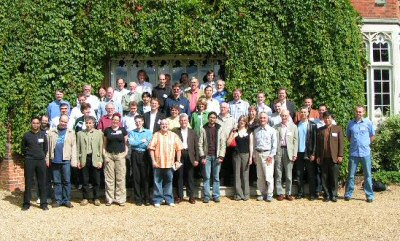

TAIC PART Attendee List
- Shaukat Ali, University of Sheffield, UK
- Mohammad Alshraideh, University of Hull, UK
- David Binkley, Loyola College Maryland, USA
- Kirill Bogdanov, University of Sheffield, UK
- Leonardo Bottaci, University of Hull, UK
- Jonathan Bowen, London South Bank University, UK
- Daniel Brenner, University of Mannheim, Germany
- Keshava Moorthy Chandrashekar, Wipro Technologies, UK
- Steve Counsell, Brunel University, UK
- Sebastian Elbaum, University College London, UK
- Suzanne Embury, The University of Manchester, UK
- Sigrid Eldh, Ericsson, Sweden
- Katalin Erdoes, ANECON GmbH, Vienna, Germany
- Peter Fagan, Vizuri Ltd., UK
- José García-Fanjul, University of Oviedo, Spain
- Jeremy Gardiner, Cranfield University, UK
- Ian Gilchrist, IPL Bath Ltd., UK
- Jean-Jacques Gras, Motorola, UK
- Mats Grindal, University of Skövde, Sweden
- Rishabh Gupta, Motorola, UK
- Mark Harman, King's College London, UK
- Mary Jean Harrold, Georgia Institute of Technology, USA
- John Hatcliff, Kansas State University, USA
- Mike Hennell, LDRA Software Technology, UK
- Rob Hierons, Brunel University, UK
- Mike Holcombe, University of Sheffield, UK
- Ian Holden, IBM, UK
- Liang Huang, University of Sheffield, UK
- Mika Katara, Tampere University of Technology, Finland
- Keqin Li, CNRS LSR-IMAG, France
- Zheng Li, King's College London, UK
- Mika Maunumaa, Tampere University of Technology, Finland
- Phil McMinn, University of Sheffield, UK
- James Miller, University of Alberta, Canada
- Thomas Ostrand, AT&T, USA
- Jani Pesonen, Nokia Corporation
- Marc Roper, University of Strathclyde, UK
- Serguei Roubtsov, Eindhoven University of Technology, Netherlands
- Ella Roubtsova, Open University of the Netherlands, Netherlands
- Muzammil Shahbaz, France Télécom, France
- Brian Shea, Vizuri Ltd., UK
- Harry Sneed, ANECON GmbH, Vienna, Germany
- Clive Stewart, IBM, UK
- Harmen Sthamer, DaimlerChrysler, Germany
- Robert Thomson, Motorola, UK
- Laurie Tratt, King's College London, UK
- Neil Walkinshaw, University of Sheffield, UK
- Joachim Wegener, DaimlerChrysler, Germany
- Elaine Weyuker, AT&T, USA
- David Willmor, The University of Manchester, UK
- Bill Woodworth, IBM, UK
- Martin Woodward, University of Liverpool, UK